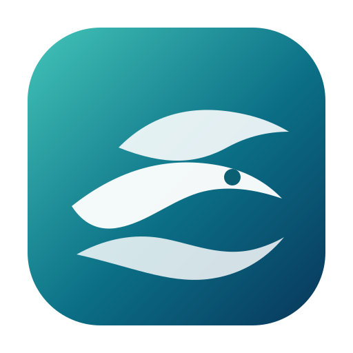
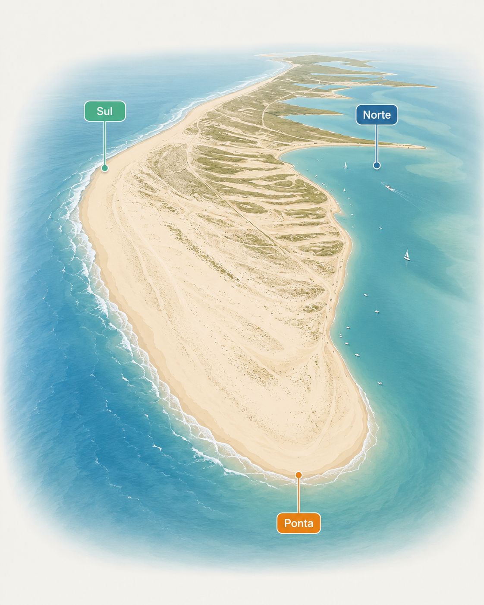

Ilha da Culatra

A app atualiza automaticamente e recalcula os scores. Sem chave de marés, usa estimativa local e permite ajuste manual.
Usa quando confirmares a tabela de marés oficial. A app recalcula maré, corrente, janelas e score de pesca.